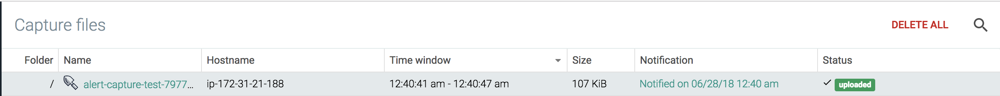

Configure Sysdig Captures
Create a Capture File
To create a capture file:
From the
Exploremodule, select a host or container.Click the
Settings(ellipsis) drop-down menu, and selectSysdig Capture. TheSysdig Capturepop-up window will open.Define the following parameters, and click the
Start Capturebutton:Parameter
Description
Capture path and name
The name of the capture file. The default name includes the date and time stamp the capture was created.
Time frame
The period of time captured. The default time is 15 seconds; the maximum capture time available is 24 hours. The capture file size limit is 100MB.
Note
Sysdig recommends using the default time to ensure captures are small and manageable.
Filter
Restricts the amount of trace information collected. For more information, including examples of available filters, refer to the Sysdig Github page.
Storage
The storage location for the capture files. The default storage location is the Sysdig Cloud Amazon S3 bucket. To configure a custom S3 storage bucket, refer to Configure AWS Capture File Storage.
The Sysdig agent will be signaled to start a capture, and send back the resulting trace file. The file will then be displayed in the Captures module.
Store a Capture File
Sysdig capture files are stored in Sysdig's AWS S3 storage (for SaaS environments), or in the Cassandra DB (for on-premises environments) by default. To configure a custom S3 storage bucket, refer to Configure a Custom S3 Capture Bucket.
Download a Capture File
To download a capture file:
From the
Capturesmodule, navigate to the target capture file.Select the target capture file.
Click theDownloadbutton. A capture file will be automatically downloaded to your local machine.
Delete Capture Files
To delete a single capture file:
From the
Capturesmodule, select the capture file to be deleted.Click the
Deletebutton at the bottom of theCapturesmodule:
On the
Keep Fileprompt, click theDeletebutton to confirm, or theKeep Filebutton to cancel.
To delete all capture files:
From the
Capturesmodule, click theDelete Allbutton: Click the
Yes, Delete Capturesbutton to confirm, or the Cancel button.